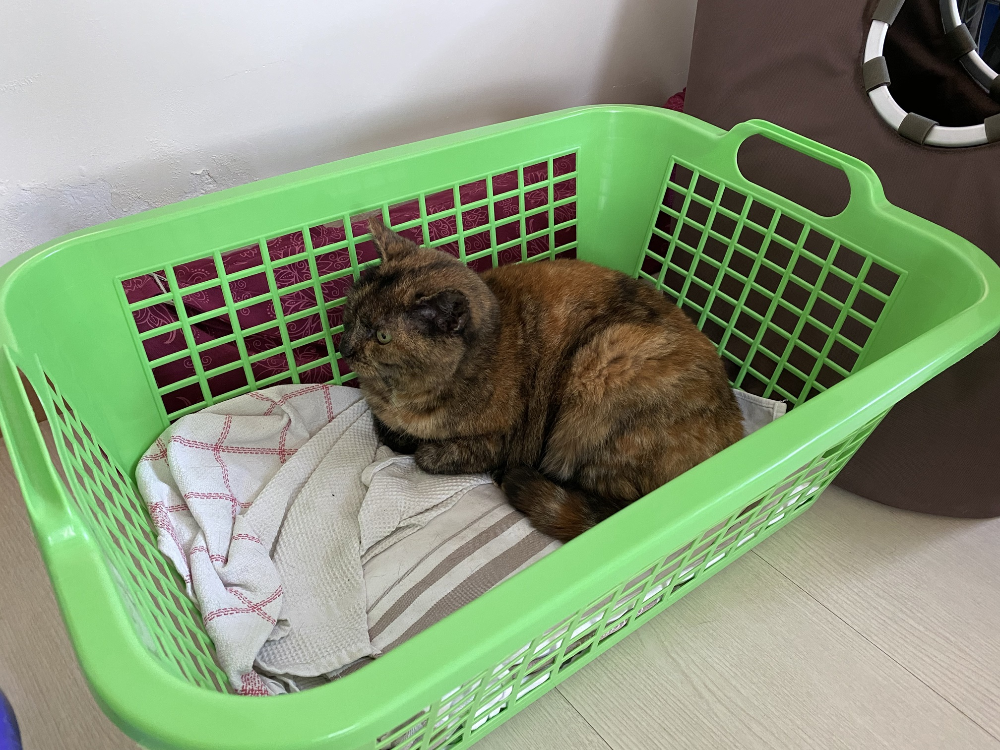
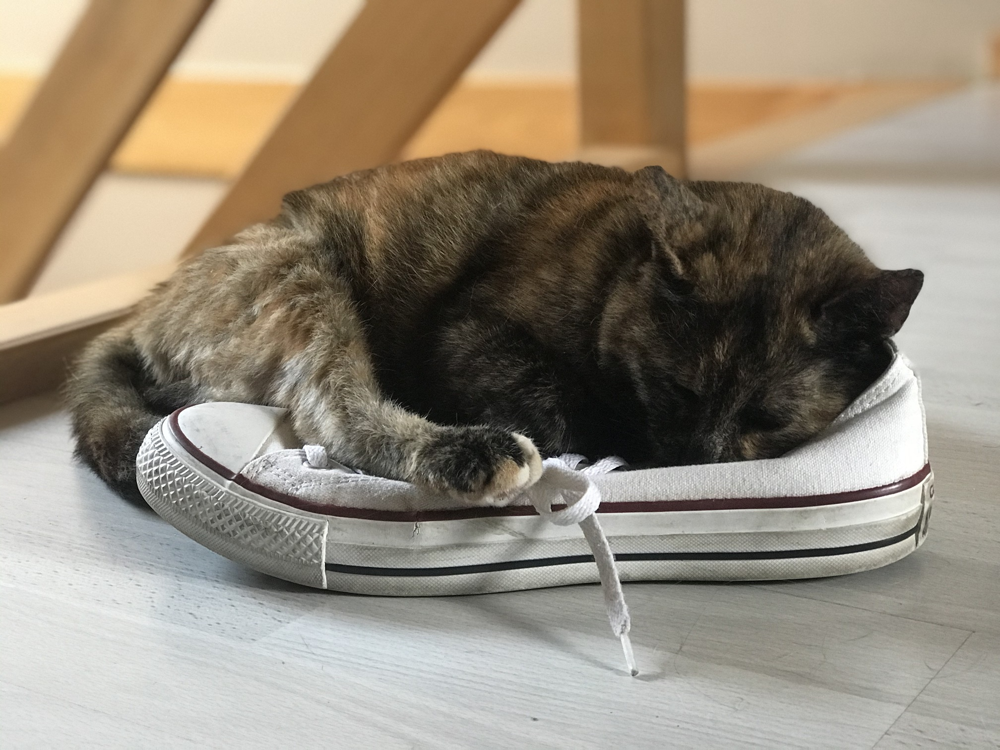
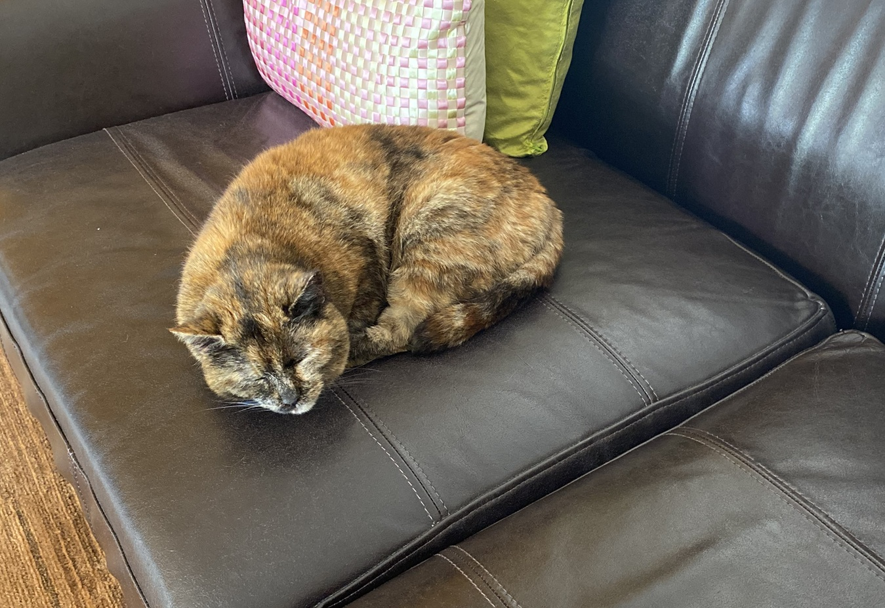
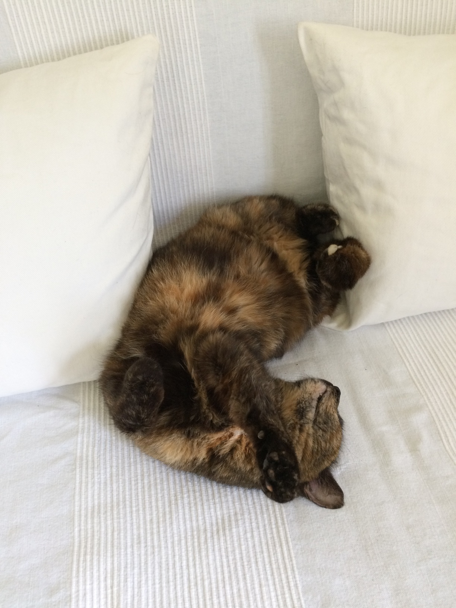
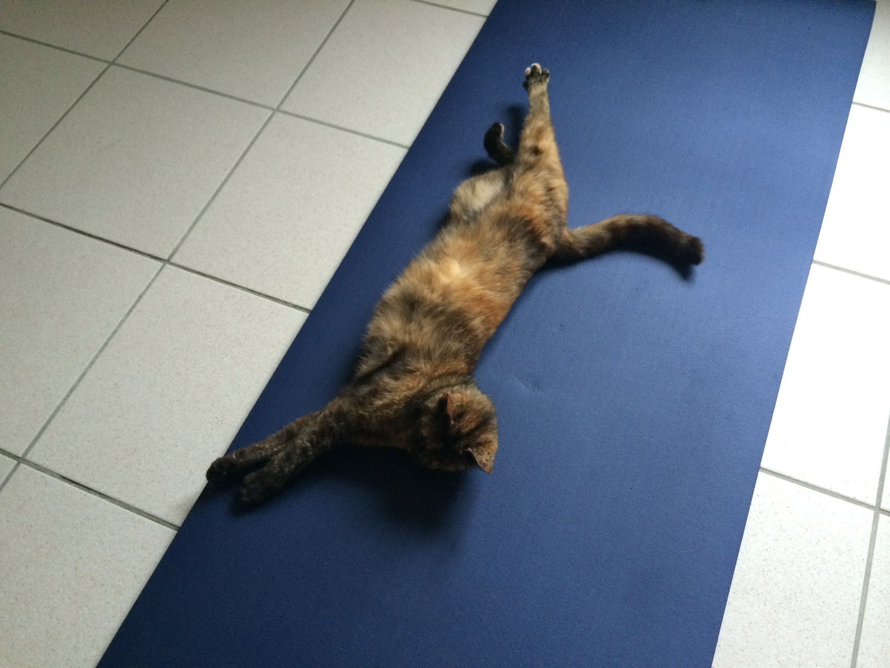
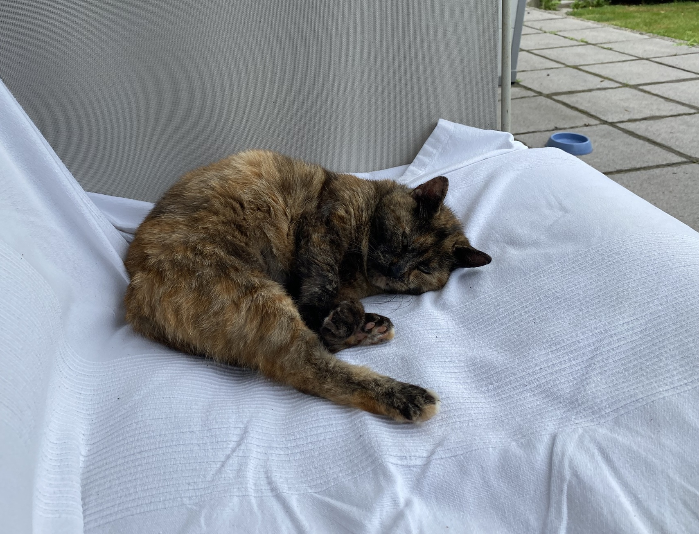
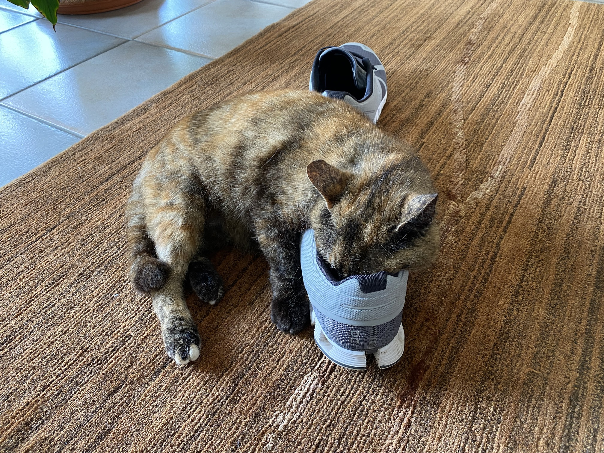
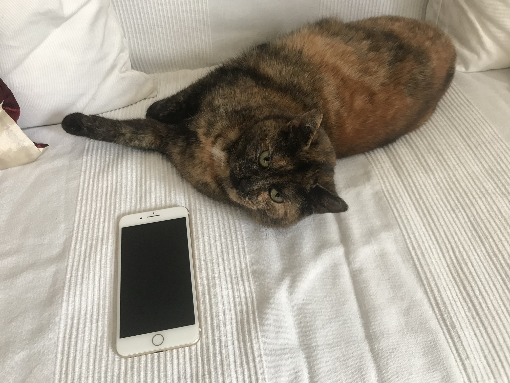

Taby likes to explore the house. There is no place that She would not have a look at or not try to sleep at. Shoes are a nice place to sleep as well. so are all kind of boxes or the laundy basket. Having a good stretch on the yoga mat is alos alway welcome.







